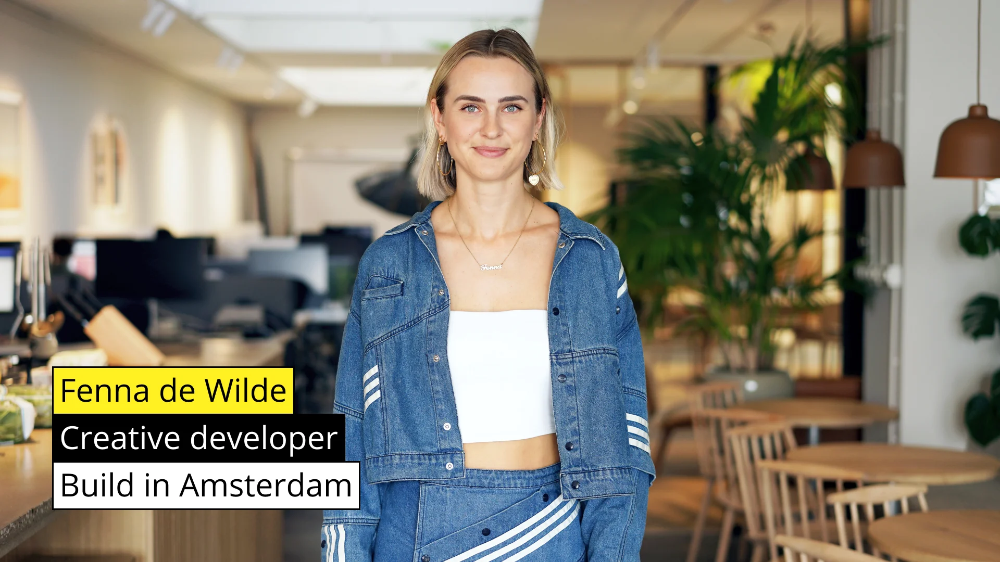

Nerd 2: Fenna de Wilde
Toegankelijkheid
Fenna
Fenna de Wilde, afgestudeerd bij CMD en momenteel werkzaam bij een groot internationaal Noors bedrijf in Amsterdam, benadrukte in haar lezing het belang van toegankelijkheid in webontwikkeling. Ze deelde haar ervaringen en gebruikte technologieën zoals React, NexUS, TypeScript en Emotion CSS. Hoewel sommige bedrijven toegankelijkheid niet prioriteren, blijft Fenna zich inzetten voor inclusieve ontwerpen.
Toegankelijkheid
Haar presentatie behandelde diverse aspecten van toegankelijkheid:
- Focus States: Gebruik van de pseudo-class om keyboardnavigatie te optimaliseren.
- Aria Attributes: Zoals aria-label, aria-controls, aria-expanded, aria-live en aria-atomic, die screenreaders helpen om inhoud beter te interpreteren en toegankelijk te maken.
- Carousel Toegankelijkheid: Richtlijnen voor het toegankelijk maken van carrousels, inclusief het vermijden van li elementen in slides en het toepassen van specifieke ARIA-kenmerken.
- Kleurcontrasten en Tekst: Het belang van goede kleurcontrasten en tekstlengtes, met een aanbeveling van max-width: 60ch; voor leesbaarheid.
- Algemene Tips: Het belang van alt-teksten, skip-to-content buttons, en het ondersteunen van gebruikers met prefers-reduced-motion voorkeuren.
Reflectie:
In eerste instantie vond ik Fenna's lezing uitdagend en moeilijk te volgen vanwege mijn beperkte kennis van de besproken technieken en begrippen. Vooral de gedetailleerde uitleg over focus guards, carrousels, en ARIA-labels gaf me de kriebels omdat ik ze niet begreep. Echter, onderwerpen zoals alt-teksten, lijnlengte, en kleurcontrast vond ik interessant en direct toepasbaar.
Twee maanden na de lezing, merk ik dat mijn begrip van toegankelijkheid verbeterd is. Ik pas nu zelf ARIA-labels toe om mijn webpagina's toegankelijker te maken. Hoewel het gedeelte over carrousels nog steeds ingewikkeld blijft, heb ik nu een beter inzicht in het belang van toegankelijke webontwikkeling en de rol van ARIA-attributen daarin.
Conclusie:
Hoewel Fenna's lezing aanvankelijk overweldigend was, heb ik uiteindelijk waardevolle inzichten opgedaan over toegankelijkheid die ik nu in mijn eigen projecten toepas. Ik ben gemotiveerd om mijn kennis verder uit te breiden en meer aandacht te besteden aan kleur, lijnlengte, en andere toegankelijkheidsprincipes in mijn werk. Daarom geef ik deze lezing een rating van 6/10.